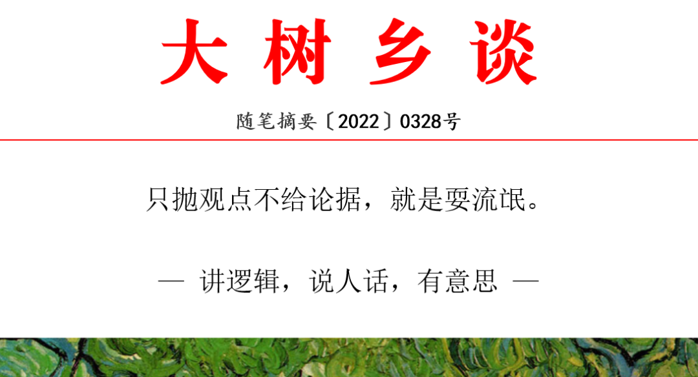

为什么要啰嗦？

最近一直有留言表示小镇的文越来越啰嗦了，有的问小镇怎么做到把一个简单的事讲了这么长。 本来不想多说的，但最近这类留言多了，还是分享下小镇的想法吧。
现代社会生活节奏确实越来越快了，小镇最近推了一些书，都是小镇看过比较好的，有助于对一些领域建立比较系统的思维。学习新的领域是一方面，更重要的是通过读书，了解作者是如何分析、推导、验证一件事。 短视频非常流行，图文也非常流行短文。曾经就有人建议小镇把文章控制在1500字以内，多发表观点、激发感情，不要那么大篇幅去论证，这种论证往往没人看，还影响阅读数据。
事实证明确实如此，但是小镇并没有盲从，即使现在的“随笔”篇幅虽然短、也更加自由，但内容还是有底线的。如果只说观点，像今天的头条，几百个字足够了，但是有价值吗？ 不这么做的原因就在于小镇不希望把“大树乡谈”变成新的“信息茧房”，这有违小镇分享的初心。 “信息茧房”其实没那么邪乎，虽然有算法的原因，但是另一个潜藏的因素就是只说观点不去论证，因为注意力太容易分散了，所以必须在十几秒、几十秒内把自己的观点说出来，扣去事实描述、问题分析、观点陈述，其他时间就没有了。
所以有很多人刷各种短视频、文章，了解了很多观点，感觉似乎吃饱了，啥都知道了，但是成体系了吗？知道为什么推导出这个观点吗？这个观点有哪些谬误吗？这些都需要更多的论据去支撑，而很多标题党是不敢放论据的，说得越多越容易被质疑。 为什么小镇说书可以放心的去读，就在于一本只要稍微靠谱的书，稍微靠谱的作者，起码还是要脸的，要遵循基本的逻辑，观点必须有论据支撑，必须有推导过程，不可能一本书也搞成只有观点的短文。 这一点在国外书籍上更加明显。
最近小镇推的书有几本是国外的，其实看完后，提炼出来的核心观点可能就几百个字，但是外国的书就习惯于把这几百个字甚至一百来个字来来回回从不同的角度、举各种例子反复论证。 教材更为明显。中国的教材特点往往是给出一个公式，然后介绍一下，紧接着就就是练习题，会用就行了。但是国外的教材，会把这个公式从历史、现实、故事等等角度进行讲解，堪称事无巨细。 啰嗦是啰嗦，但哪一个更能让普通人更深刻的认知新的领域呢？ 小镇能力有限，每天能够拿出来分享的时间也不可能太多，不可能为了写一篇文章还得专门去查资料，所以基本上就是基于脑子里已有的，也没有提纲，随写随想、随想随写，尽可能把事儿说的详细些，客观上也确实比较啰嗦，再精炼些确实没问题，但很遗憾，还是时间和精力问题。
授人以鱼不如授人以渔，小镇能做的就是提供更多的线索、分享不同领域的一些思考。如果有兴趣可以自己去深挖，如有所得，也希望留言分享，让我们一起变得更好。
其他文章推荐
■ 2022年中国房地产政策、房价及个人选择
如果喜欢，还请点赞、“在看”和关注吧 欢迎分享，让更多人发现“大树乡谈”